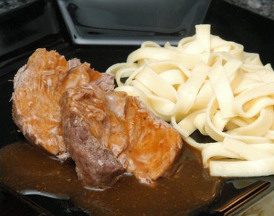

| Zutaten für 6 Personen: | |
| 750 g | Schweinsbraten |
| 3/4 TL | Salz |
| 1/8 TL | Pfeffer |
| 60 g | Rüebli |
| 50 g | Sellerie |
| 80 g | Zwiebeln |
| 1 EL | Bratfett |
| 6 dl | Bouillon |
| 1/2 TL | Majoran |
| 1 EL | Tomatenpurée |
| 1TL | Maizena |
Gemüse waschen. Rüebli schälen und in 1cm Würfel schneiden. Den Stangensellerie ebenfalls in 1cm Stücke schneiden und die Zwiebeln auch hacken.
Den Braten im Bratfett von allen Seiten schön anbraten.
Das Gemüse beigeben und mit der Hälfte der Bouillon ablöschen.
Den Majoran zugeben und währen 1.5 - 2 Stunden auf kleiner Flamme garen.
Von Zeit zu Zeit den Braten wenden.
Den Braten herausnehmen und 10 Minuten ruhen lassen.
Das Gemüse absieben und entsorgen; den Fond mit dem Rest der Bouillon dem Tomatenpurée und dem angerührten Maizena aufkochen.
Den Braten quer zur Faser aufschneiden und mit der Sauce in einer Sauciere servieren.
Herbert Eigenmann, Code: SWM
Ich wusste nicht was mit dem zerkochten Gemüse anstellen und habe es weggeworfen da es unansehnlich aussah. Anscheinend (nach einigem Googlen) genau richtig, da es den Geschmack an die Sauce abgeben soll. Der Braten hat an der Sauce wunderbar geschmeckt. RE 10.4.2010